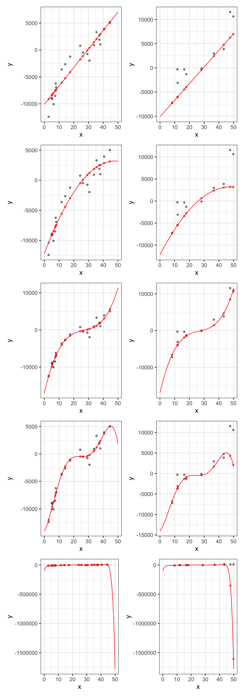

The Bias-Variance TradeOff: Overfitting and Underfitting
Published
August 3, 2024
Where We Stand
We’ve spent the past few weeks hypothesizing, building, assessing, and interpreting multiple linear regression models. That is, models of the form: \[\mathbb{E}\left[y\right] = \beta_0 + \beta_1 x_1 + \beta_2 x_2 + \cdots + \beta_k x_k\]
We began with simple and multiple linear regression models for which all of the predictors \(x_1,~x_2,~\cdots,~x_k\) were independent, numerical predictors. In these cases, we were able to interpret each \(\beta_i\) as the expected change in the response given a unit increase in the corresponding predictor \(x_i\) – that is, each \(\beta_i\) was a slope.
We then considered models which used categorical predictors as well as numerical predictors. In these cases, we needed to convert our categorical variable into a set of dummy variables (taking values 0 or 1), so that they could be consumed by our multiple linear regression model. In these cases, we were able to interpret the \(\beta_i\) belonging to a dummy variable \(x_i\) as an adjustment on the intercept for the model – that is, each \(\beta_i\) attached to a dummy variable represents a vertical shift in the model.
Continuing to expand our ability to create models that fit data, we considered an ability to engineer higher-order terms. These terms were polynomial terms consisting of a single predictor raised to a positive integer exponent or interaction terms consisting of products of predictors.
Introducing polynomial terms brings curvature to our model – the more polynomial terms, and the higher the degree of the polynomial, the more wiggly our model can be.
The effect of introducing interactions terms to our model depends on the types of the variables we are allowing to interact.
Interactions between pairs of categorical predictors results in more distinct intercepts.
Interactions between a categorical predictor and a numerical predictor results in differently sloped models for different levels of the categorical variable.
Interactions between pairs of numerical predictors results in a curved model, where the rate of change in the response variable with respect to one of the variables in the interaction depends on the level of the other interacting variable.
The introduction of these higher-order terms results in…
improved fit to training data.
an ability to model more complex relationships.
much more difficulty in interpreting our models.
In this notebook, we’ll explore the dangers of these more flexible models.
Objectives
Identify that including additional predictors, and higher-order terms increases the flexibility of a model.
Identify and discuss that this additional flexibility increases the risk that our model overfits the training data.
Discuss the dangers associated with utilizing an overfit model.
Discuss the notions of bias/variance, model flexibility, over-fitting/under-fitting.
Note: In this notebook we’ll be generating some fake data to illustrate and emphasize particular phenomena when modeling. If you’d like, you can watch this video, which covers all of the topics in this notebook.
The Bias-Variance Tradeoff
The level of bias in a model is a measure of how conservative it is. Models with high bias have low flexibility – they are more rigid, “flatter” models. Models with low bias have high flexibility – they can wiggle around a lot. There are several ways to decrease the bias in a model.
We can introduce more predictor variables to the model.
We can introduce higher-order terms
Anything that allows the model more freedom to adapt to individual data points will lower the bias of that model.
The level of variance for a model is a measure of how much that model’s predictions would change if it was given new training data from the same population. One way to approximate this is to think about (or actually estimate) how the model would change if a new training observation was included in the training set. If the new training observation does not change the model, or its predictions, all that much then the model has low variance. If this new training observation can drastically change the model and its predictions, then that model has high variance.
The bias and variance metrics go hand-in-hand.
Highly biased models have very low variance.
Models with very low bias have high variance.
When we decrease model bias, by allowing the model access to additional predictors, higher-order terms, etc. then we are also increasing model variance.
Let’s see some extreme examples below. We’ll create a high-bias, low-variance model on the left (it is a straight-line model) and a low-bias, high-variance model on the right (it has degree 10).
Let’s see what happens if we add in one new training observation. We’ll make that observation at \(x = 50\), \(y= 75\). We’ll then refit the models with this new training observation and see how the new models compare to the old ones.
Notice that the high-bias, straight-line model has almost not changed at all. The low-bias model really has changed – in fact, this single observation has impacted the models predictions even in locations far away from where that observation sits. This means that low-bias, high-variance models are less stable than higher-bias, lower variance models.
What’s Going On Here?
I’ve mentioned thinking about training data as a “practice test” for a model. With low-bias, high-variance models, we are letting our model really focus on that practice test and learn a lot from it. The lower the bias, the more our model will react to individual data points – that is, the model will focus on really learning to do well on the practice test – unfortunately, just because the model does well on the training observations (practice test), that doesn’t necessarily mean that the model will do well in predicting the test or future observations (the actual test).
Low-bias, high-variance models learn more about the training data. They are able to pick up more intricate relationships. This isn’t necessarily a bad thing – especially if the true association between the response and predictor(s) is well-modeled by a flexible relationship. However, these low-bias, high-variance models are at greater risk of learning too much about the training data and not generalizing well to the test data or to new data.
Overfitting and Underfitting
A model is overfit if it has learned too much about the training data and doesn’t perform as well as expected when applied to new or test data. A model is underfit if it is too biased and isn’t flexible enough to model the true association between the response variable and the associated predictor(s). Luckily, we can take steps to identify whether models are likely overfit or could possibly be underfit.
A model is overfit if its training error is much less than its test error.
A model may be underfit if a more flexible model out-performs it on unseen test data.
If the test error for a model is less than the training error for that model, then this may be an indicator that the model is underfit.
Let’s see these ideas in action. We’ll begin with another toy dataset. We’ll build that dataset to have a cubic association between a single predictor x and a desired response y.
Now that we have our data, let’s train a variety of models. We’ll run a first-order model (straight-line), a second-order model (parabola), and third-order model (cubic), a fifth-order model, and an 11th-order model. We’ll see how each model performs on both the training and test data!
Now that we’ve fit all these models, we’ll make three sets of predictions using each one. We’ll make predictions on the training observation, predictions on the test observations, and finally predictions for lots of x-values between \(0\) and \(50\), which will allow us to draw the curves that our models define.

For each model, the R-squared and RMSE values appear in the two tables below. The first table gives the metrics associated with the training data, while the second table gives the metrics associated with the test data. Notice that, for the training data, the metrics improve as the flexibility of the model increases. With the unseen test data, however, there is a point at which the error metrics indicate that the model becomes overfit. Again, this is the importance of unseen data providing an unbiased estimate for model performance on new data!
model
degree
rsq
rmse
straight-line
1
0.8829177
1718.0431
quadratic
2
0.9130145
1480.8529
cubic
3
0.9612079
988.9182
5th-Order
5
0.9665440
918.3865
11th-order
11
0.9872580
566.7715
On the training data, the metrics keep getting better and better! Let’s check out if the same is true with the unseen test data…
model
degree
rsq
rmse
straight-line
1
0.8414239
3290.000
quadratic
2
0.7313685
4139.603
cubic
3
0.9280213
1725.986
5th-Order
5
0.7245448
3758.389
11th-order
11
0.4429908
524434.072
Nope! What we are seeing here is evidence of overfitting. The training performance metrics continue to improve, while the test metrics improve with some additional flexibility, but then get much worse. We can see this visually below.
We can identify from the table of test error metrics or from the elbow plot above, that the model becomes overfit once we include polynomial terms above degree \(3\). The cubic model is the model that performs best when responses are not known ahead of time. That is, the cubic model is the model that is expected to provide the best predictions on new data! Because it is expected to provide the best predictions, it is also the form of the model that we should be most confident extracting inferences from.
Summary
In this notebook, we discussed and saw the bias/variance trade-off. This trade-off is associated with the level of flexibility of a model – models which are very rigid (unflexible) are said to have high bias, while models which are very flexible are said to have low bias. Models with high bias have low variance – they change relatively little when given different training data. Models with low bias have high variance – they are very responsive to the data they were trained on and can change quite drastically if provided different training data. Models with high bias and low variance are stable models but they can risk underfitting (not capturing the general trend between the response and predictors). Models with low bias and high variance can fit more complex trends between the response and predictors but they risk overfitting (learning too much about the training data and not generalizing well).
In this notebook we saw that increasing the level of model flexibility allows for improved fit to the training data. Since we are typically interested in models which fit new, unseen data, we need some way to detect the point at which a model becomes overfit. That is, the threshold for level of model flexibility where any additional flexibility is associated with negative impacts on model performance for unseen validation data. We’ll see a reliable method for this in the next notebook.